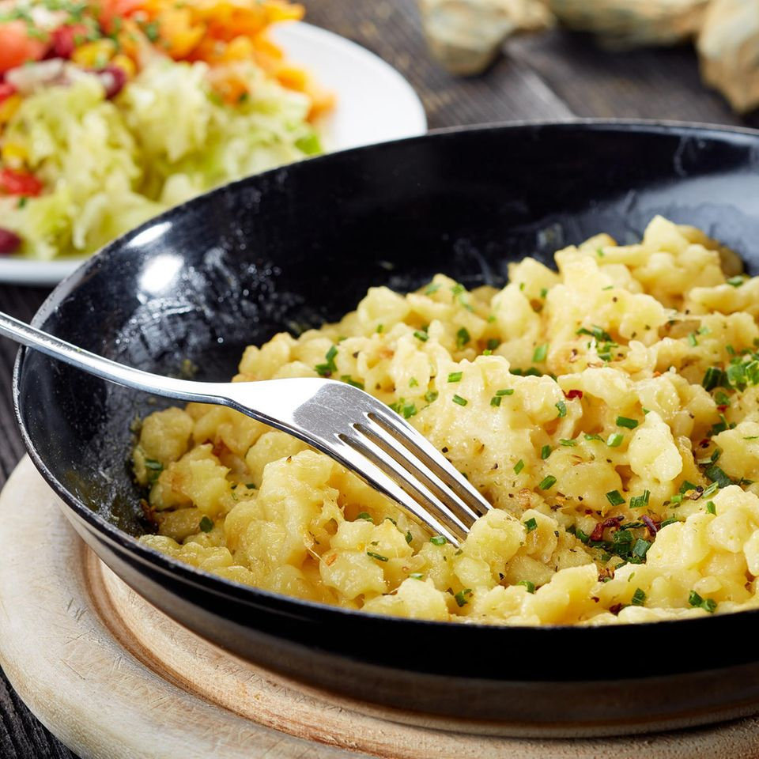

Käsespätzle

Description
Käsespätzle is a simple traditional Austrian dish. It is mainly
a combination of "Käse" (cheese) and "Spätzle", which are small pieces of
dough, remotely similar to pasta. While it will taste better if you make
the dough for the Spätzle yourself, this is more effort, so we will resort
to premade Spätzle instead in this recipe.
Ingredients (per person)
- 250g Spätzle
- 300g cheese (typically "Hüttenkäse")
- 1 onion
- Some oil, e.g. olive oil or vegetable oil
- salt
- pepper
- water (amount should be given on the Spätzle package)
Steps
- Slice the onion into strips
- Grate the cheese finely
- Put a bit of oil in a pan and heat it up at medium-low heat, then
add the sliced onion. The pan should be big enough to also contain the
cheese and Spätzle later
- In a pot, bring water to a boil. Then salt the water heavily and add
the Spätzle
- Wait for the time given on the Spätzle package, then try some of it
for doneness, it should have expanded quite a bit, but still be chewy.
Meanwhile the onion should slowly simmer to the point that it is pretty
translucent. If the onion looks finished or is starting to turn darker,
just kill the heat
- When both are finished, drain the Spätzle and add it to the onion
pan, along with the grated cheese. At this point, the Spätzle should
still be hot enough to melt the cheese, optionally you can add a bit of
heat. Mix quickly to spread the cheese evenly. Salt and pepper to taste
Enjoy!